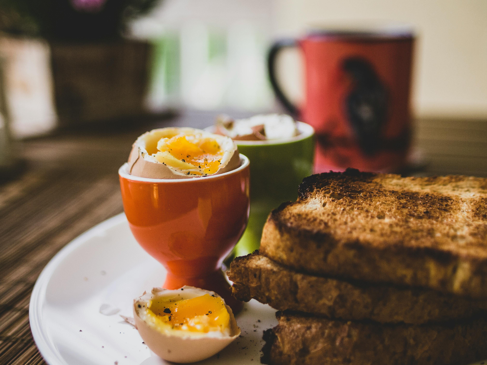

A former hunting lodge turned bed and breakfast, Amaranth House was founded by Cordelia Rose.
We've been in
business for 45 years now and while we've updated a few things our service is the same as ever. We remain family
owned and run, and aim to provide a quiet respite for those looking to get away from the hustle and bustle Port
Elissa. We welcome your family, including any puppies, to come spend the night and enjoy the peace that can only
be found out in the woods. 
We have private walking trails perfect for unplugging from today's digital life, as well as designated
dog-friendly walking areas and a fenced area where your four-legged family members can run free.
If that
wasn't enough, we also have a special summertime service offering boat rentals to take out on the nearby lake.
We also allow fishing and during summer months we have plenty of space for enjoying the season.
And don't
forget to enjoy the night outside. We're far enough from Port Elissa that we have some amazing views of the
stars!
All rooms include the price of breakfast, which will be served in the main dining room from 6-8AM daily with a menu that will shift seasonally.
Check out our room listings or request information on the linked pages at the top. Be aware we are closed from December-February and only book rooms for a maximum of 2 nights. Perfect for a weekend away.